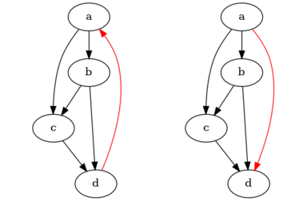
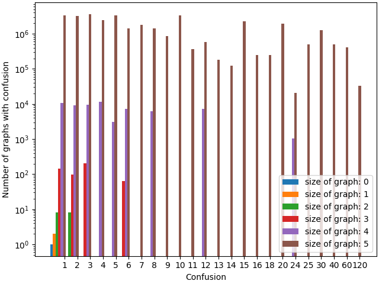
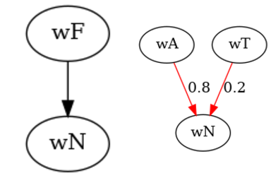

author: niplav, created: 2022-03-04, modified: 2023-07-25, language: english, status: notes, importance: 8, confidence: likely
Representing inconsistent preferences with specific mathematical structures can clarify thoughts about how to make those preferences consistent while only minimally changing them. This is discussed in the case of preferences over world states, represented by directed graphs; and preferences over lotteries of world states, represented either by infinitely dense graphs, (in some cases) vector fields over probability simplices, or edge-weighted directed graphs. I also present an algorithm for the discrete case based on the graph edit distance. Implications for scenarios such as ontological shifts are discussed.
A kind of God-made (or evolution-created) fairness between species is also unexpectedly found.
— Yew-Kwang Ng, “Towards Welfare Biology: Evolutionary Economics of Animal Consciousness and Suffering” p. 1, 1995
Random testing is simple in concept, often easy to implement, has been demonstrated to effectively detect failures, is good at exercising systems in unexpected ways (which may not occur to a human tester), and may be the only practical choice when the source code and the specifications are unavailable or incomplete.
— Tsong Yueh Chen/Fei-Ching Kuo/Robert G. Merkel/T.H. Tse, “Adaptive Random Testing: the ART of Test Case Diversity”, 2010
Consider an agent which displays (von Neumann-Morgenstern) inconsistent preferences, for example choosing two incompatible options in the two scenarios in the Allais paradox, or reliably displaying cycles in its actions (detecting which actions are in fact caused by inconsistent preferences, and not just exotic ones from weird abstractions, is considered a separate problem here). We might want to interact with that agent, e.g. trade with it, help it (or exploit it), or generally know how it will act But how to go about that if the agent displays inconsistent preferences? Perhaps it might even be the case that humans are such agents, and find ourselves in a conundrum: we know our preferences are inconsistent and reliably exploitable, and that agents with such preferences reliably fare worse in the world, we might want to change that.
A possible approach to this problem has two steps:
Define a set of possible (von Neumann-Morgenstern) inconsistent preferences over a set of worlds as , and the set of consistent preferences over those worlds as . Elements from those sets are written as and .
One way we could approach the problem is by trying to turn those inconsistent preferences consistent, i.e. constructing a function that takes an inconsistent preference and transforms it into a consistent preference , while retaining as much of the original structure of the preference as possible (it would make little sense if we replaced the original preference relation with e.g. indifference over all options).
Formally, we want to find for some given distance metric a function so that
I call this function a turner, and sometimes call the results of that function the set of turnings (an element from that set is a turning). The names mostly chosen for not having been used yet in mathematics, as far as I know, and because I want to be a little extra.
A solution to the problem of turning inconsistent preferences into consistent ones then has these components:
This work is closely related to the investigations in Aird & Shovelain 2020 (so closely that even though I believe I re-invented the approach independently, it might just be that I had read their work & simply forgotten it), and broadly related to the value extrapolation framework outlined in Armstrong 2022.
When we have discrete sets of worlds , we can represent an inconsistent preference over those worlds by using a directed graph . The presence of an edge would mean that , that is is preferred to .
Mathematically, then, is the set of all possible graphs with edges in , that is ).
The consistent equivalent to an inconsistent preference represented by a directed graph would be a path graph over the same set of vertices . The method for transforming into would be by adding/deleting the minimal number of vertices from .
Mathematically, then is the set of transitive closures of all possible path graphs that are encode permutations of ; .
Consider the following directed graph:
Here, .
An edge from to means that is preferred to (short ). The absence of an edge between two options means that those two options are, from the view of the agent, incomparable.
It violates the two von Neumann-Morgenstern axioms for discrete options:
A possible turned version of these preferences could then be the following graph:

This graph looks quite messy, but it's really just the transitive closure of this graph:

Whether this is the "right" way to turn the previous inconsistent preferences depends on the choice of distance metric we would like to use.
In some sense, we want to change the inconsistent preferences as little as possible; the more we modify them, the more displayed preferences we have to remove or change. Since the presence or absence of preferences is encoded by the presence or absence of edges on the graph, removing edges or adding new edges is equivalent to removing or adding preferences (at the moment, we do not consider adding or removing vertices: we stay firmly inside the agent's ontology/world model).
Luckily, there is a concept in computer science called the graph-edit distance: a measure for the difference between two graphs.
The set of possible editing operations on the graph varies, e.g. Wikipedia lists
- vertex insertion to introduce a single new labeled vertex to a graph.
- vertex deletion to remove a single (often disconnected) vertex from a graph.
- vertex substitution to change the label (or color) of a given vertex.
- edge insertion to introduce a new colored edge between a pair of vertices.
- edge deletion to remove a single edge between a pair of vertices.
- edge substitution to change the label (or color) of a given edge.
—English Wikipedia, “Graph Edit Distance”, 2021
Since we do not have labels on the edges of the graph, and have disallowed the deletion or insertion of vertices, this leaves us with the graph edit distance that uses edge insertion and edge deletion.
We can then write a simple pseudocode algorithm for :
turn(G≿=(W, E≿)):
mindist=∞
for L in perm(W):
L=trans_closure(L)
dist=ged(G≿, R)
if dist<mindist:
R=L
mindist=dist
return R
where perm(W) is the set of
permutations on W,
trans_closure(G) is the transitive closure of a graph G, and ged(G1,
G2) is the graph edit distance from G1 to G2.
Or, mathematically,
Implementing this in Python 3 using the networkx library turns out to be easy:
import math
import networkx as nx
import itertools as it
def turn(graph):
mindist=math.inf
worlds=list(graph.nodes)
for perm in it.permutations(worlds):
perm=list(perm)
pathgraph=nx.DiGraph()
for i in range(0, len(worlds)):
pathgraph.add_node(worlds[i], ind=i)
# The transitive closure over this particular path graph
# Simplify to nx.algorithms
for i in range(0, len(perm)-1):
pathgraph.add_edge(perm[i], perm[i+1])
pathgraph=nx.algorithms.dag.transitive_closure(pathgraph)
# Compute the graph edit distance, disabling node insertion/deletion/substition and edge substitution
edge_cost=lambda x: 1
unaffordable=lambda x: 10e10
same_node=lambda x, y: x['ind']==y['ind']
edge_matches=lambda x, y: True
dist=nx.algorithms.similarity.graph_edit_distance(graph, pathgraph, node_match=same_node, edge_match=edge_matches, node_del_cost=unaffordable, node_ins_cost=unaffordable, edge_ins_cost=edge_cost, edge_del_cost=edge_cost)
if dist<mindist:
result=pathgraph
mindist=dist
return result
We can then test the function, first with a graph with a known best completion, and then with our example from above.
The small example graph (top left) and its possible turnings are (all others):

>>> smallworld=['a', 'b', 'c']
>>> smallgraph=nx.DiGraph()
>>> for i in range(0, len(smallworld)):
... smallgraph.add_node(smallworld[i], ind=i)
>>> smallgraph.add_edges_from([('a', 'b')])
>>> smallre=turn(smallgraph)
>>> smallre.nodes
NodeView(('a', 'b', 'c'))
>>> smallre.edges
OutEdgeView([('a', 'b'), ('a', 'c'), ('b', 'c')])
This looks pretty much correct.
>>> mediumworld=['a', 'b', 'c', 'd', 'e', 'f', 'g']
>>> mediumgraph=nx.DiGraph()
>>> for i in range(0, len(mediumworld)):
... mediumgraph.add_node(mediumworld[i], ind=i)
>>> mediumgraph.add_edges_from([('a', 'b'), ('b', 'c'), ('c', 'd'), ('c', 'e'), ('e', 'f'), ('f', 'g'), ('g', 'b')])
>>> mediumres=turn(mediumgraph)
>>> mediumres.nodes
NodeView(('a', 'b', 'c', 'd', 'e', 'f', 'g'))
>>> mediumres.edges
OutEdgeView([('a', 'b'), ('a', 'c'), ('a', 'd'), ('a', 'e'), ('a', 'f'), ('a', 'g'), ('b', 'c'), ('b', 'd'), ('b', 'e'), ('b', 'f'), ('b', 'g'), ('c', 'd'), ('c', 'e'), ('c', 'f'), ('c', 'g'), ('d', 'e'), ('d', 'f'), ('d', 'g'), ('e', 'f'), ('e', 'g'), ('f', 'g')])
This is actually equal to the hypothesized solution from above (below is the non-transitive-closure version):
This solution has some glaring problems.
Some of you might have noticed that this algorithm is somewhat inefficient (by which I mean absolutely infeasible).
Since we iterate through the permutations of , the runtime is (with the added "benefit" of additionally computing the NP-complete graph edit distance inside of the loop, which is also APX-hard to approximate).
Possible better approaches would involve finding the longest subgraph that is a path graph, or the spanning tree, perhaps the transitive reduction is helpful, or maybe the feedback arc set?
Part of the solution turns out to be so blindingly simple that I missed it: When just considering the graph edit distance between a graph and one of its possible turnings, this can be computed in linear time with the size of the symmetric set difference of the edges of the graph and its turning. The reason for this is that each edge that appears in the original graph but not in its potential turning needs to be removed at some point, and every edge that appears in the potential turning but not in the original graph needs to be removed at some point. The symmetric set difference is simply the minimal set of those edges: any smaller and you'd be missing some edges.
I really missed the forest for the trees with this one then: thinking too complicatedly about a simple problem (similar to solving the maximum subarray problem with Kadane's algorithm).
We can modify the algorithm to compute dist more efficiently:
turn(G≿=(W, E≿)):
[…]
dist=|E≿ΔE_L|
[…]
and its implementation
def turn(graph):
[…]
dist=len(set(graph.edges)^set(pathgraph.edges))
[…]
This has a very significant practical speedup for the relevant cases I look at, but is still factorial in the number of nodes in the graph.
Another, smaller problem is that the algorithm often doesn't have a unique result, as seen in the small example above.
We can compute the set of all possible turnings with some trivial changes to the algorithm:
turn_all(G≿=(W, E≿)):
mindist=∞
R=∅
[…]
if dist<mindist:
R={L}
mindist=dist
else if dist==mindist:
R=R∪{L}
return R
and its implementation
def turn_all(graph):
results=set()
[…]
if dist<mindist:
results=set([pathgraph])
mindist=dist
elif dist==mindist:
results.add(pathgraph)
return results
The results, with the small example, are as expected:
>>> turnings=list(turn_all(smallworld, smallgraph))
>>> len(turnings)
3
>>> turnings[0].edges
OutEdgeView([('a', 'b'), ('a', 'c'), ('b', 'c')])
>>> turnings[1].edges
OutEdgeView([('a', 'b'), ('c', 'a'), ('c', 'b')])
>>> turnings[2].edges
OutEdgeView([('a', 'c'), ('a', 'b'), ('c', 'b')])
For the big example, after waiting a while for the solution:
>>> turnings=list(turn_all(mediumgraph))
>>> len(turnings)
49
I will not list them all, but these are less than the possible options.
This brings up an interesting question: As we have more and more elaborate inconsistent preferences over more worlds, does it become more likely that they have a unique consistent preference they can be turned to? Or, in other words, if we make the graphs bigger and bigger, can we expect the fraction of inconsistent preferences with a unique turning to grow or shrink (strictly) monotonically? Or will it just oscillate around wildly?
More formally, if we define as the set of graphs with nodes, and as the set of graphs with nodes that have unique path graphs associated with them.
We can further define the set of all graphs with nodes with turnings as (of which is just a special case).
We can call the size of the set of all turnings of a graph the confusion of that graph/set of inconsistent preferences: If the graph is already the transitive closure of a path graph, the size of that set is (arguendo) 1: there are no other possible turnings. If the graph contains no edges (with nodes), the confusion is maximal with , the preferences carry the minimal amount of meaning.
The minimal number of turnings a graph can have is 1, with a graph-edit distance of 0: any transitive closure of a path graph satisfies this criterion (if your preferences are already consistent, why change them to be more consistent?)
However, those graphs aren't the only graphs with exactly one turning, consider the following graph (left) and a possible turning (right) (with graph-edit distance 1; the changed edge is red, a nice opportunity for some rubrication):

One can easily see that it has exactly one turning, and checking with the code confirms:
>>> counter=nx.DiGraph()
>>> counterworld=['a', 'b', 'c', 'd']
>>> for i in range(0, len(smallworld)):
... smallgraph.add_node(smallworld[i], ind=i)
>>> counter.add_edges_from([('a', 'b'), ('b', 'c'), ('c', 'd'), ('a', 'c'), ('b', 'd'), ('d', 'a')])
>>> counterres=list(turn_all(counter))
>>> len(counterres)
>>> >>> counterres[0].edges
OutEdgeView([('a', 'b'), ('a', 'c'), ('a', 'd'), ('b', 'c'), ('b', 'd'), ('c', 'd')])
For a graph with nodes the maximal number of turnings it is upper-bounded by , and a sufficient condition for the graph to have that many turnings is when the graph is the union of a set of complete digraphs with disjoint nodes. For example the graph with 4 nodes and no edges has 24 possible turnings, as does the graph with 4 nodes and two edges .
We can prove this inductively: When considering a node-labeled graph with nodes and no edges, the graph edit distance to any path graph variant of that graph is the same, because we always have to add edges to reach any transitive closure of a path graph (by the sum of any arithmetic progression). Let now be a graph with nodes that is solely the union of complete digraphs with disjoint nodes. When we now pick two nodes and from and add the edges (that is, we connect and , and all their neighbors) to , we have necessarily increased the graph-edit distance to any path graph by the same amount, we have symmetrically added edge-pairs that need to be broken in either direction.
One can now pose several (possibly distracting) questions:
turn a graph or the transitive closure of ?We can check these empirically! While it would be nice to prove anything about them, I'm just as happy to investigate them computationally. This is pretty straightforward: For increasing , generate , for every , compute , save the data in a file somewhere, and do interesting things with that data.
In code, we first generate all directed graphs with nodes with a recursive function
def all_directed_graphs(n):
if n<=0:
return [nx.DiGraph()]
graphs=all_directed_graphs(n-1)
newgraphs=[]
for g in graphs:
g.add_node(n, ind=n)
for tosubset in powerset(range(1, n+1)):
for fromsubset in powerset(range(1, n)):
gnew=g.copy()
for element in tosubset:
gnew.add_edge(n, element)
for element in fromsubset:
gnew.add_edge(element, n)
newgraphs.append(gnew)
return newgraphs
and start turning:
max=16
for i in range(0,max):
graphs=turn.all_directed_graphs(i)
for g in graphs:
print('{0},{1},"{2}"'.format(i, len(turn.turn_all(g)), g.edges))
However, my computer quickly freezes and I find out that this is a lot of graphs:
>>> [len(list(all_directed_graphs(i))) for i in range(0,5)]
[1, 2, 16, 512, 65536]
So the number directed graphs with 5 nodes would
be (the number of adjacency
matrices for
graphs with 5 nodes), far too many for my puny laptop. But
instead of generating them all, one can just generate a
random sample and test on that, using the Erdős–Rényi
model,
for which networkx has the helpful function
generators.random_graphs.gnp_random_graph (Wikipedia informs us that
"In particular, the case corresponds to the case
where all graphs on vertices are chosen
with equal probability."). We have to randomly add reflexive edges (not
included in the model, it seems) with probability each,
and labels for the nodes, and then we're good to go:
samples=256
for i in range(6,lim):
for j in range(0,samples):
g=nx.generators.random_graphs.gnp_random_graph(i, 0.5, directed=True)
for n in g.nodes:
g.add_node(n, ind=n)
if random.random()>=0.5:
g.add_edge(n,n)
print('{0},{1},"{2}"'.format(i, len(turn.turn_all(g)), g.edges))
We now run the script in the background, happily collecting data for us
(python3 collect.py >../../data/turnings.csv &), and after a nice
round of editing this text go back and try to make sense of the data,
which runs squarely counter my expectations:
>>> import pandas as pd
>>> df=pd.read_csv('data/turnings_small.zip')
>>> df.groupby(['0']).mean()
1
0
1 1.000000
2 1.500000
3 2.625000
4 4.910156
It seems like the mean number of turnings actually increases with the graph size! Surprising. I'm also interested in the exact numbers: Why exactly 4.910156… for the graphs with 4 nodes? What is so special about that number‽
Looking at unique turnings turns (hehe) up further questions:
>>> def uniqueratio(g):
... return len(g.loc[g['1']==1])/len(g)
...
>>> df.groupby(['0']).apply(uniqueratio)
0
1 1.000000
2 0.500000
3 0.281250
4 0.164062
dtype: float64
>>> def uniques(g):
... return len(g.loc[g['1']==1])
>>> df.groupby(['0']).apply(uniques)
0
1 2
2 8
3 144
4 10752
5 3306240
dtype: int64
This sequence of numbers is interesting: Its th term is the number of labeled graphs with nodes and confusion 1.
Very much to my surprise, searching for "1,2,8,144,10752,3306240" in the OEIS yields no results (even without leading one) or using Superseeker, even though the sequence really looks like something that would already exist! (I think it has a specifically graph-theoretic "feel" to it). But apparently not so. An interesting fact about the sequence is that it is "redundant": Each graph with nodes is represented times, with all possible permutations of vertex labelings. For example, the example graph from this section is counted in 24 different variants. One can therefore divide the sequence by , which gives the sequence "1,2,4,24,448,27552", which also doesn't occur in the OEIS (neither does the sequence without the leading one, and superseeker also doesn't find anything). I have tried to submit this sequence to the OEIS, but they require a real-world identity (which I'm not willing to reveal). Oh well. I still stake my claim for this sequence, it shall henceforth be called the niplav numbers (if I am indeed the first person to have found them).
The number of unique resolutions for the graph with 1 node makes sense, though: Removing the reflexive edge should count as one edge action, but the graph only has one unique resolution:
>>> df.loc[df['0']==1]
0 1 []
0 1 1 []
1 1 1 [(1, 1)]
We can now try to plot this:
import numpy as np
import pandas as pd
import matplotlib.pyplot as plt
def plot_confusions(df, multiplier):
values=np.zeros(len(labels))
for i in range(0, len(labels)):
try:
values[i]=df.loc[df[1]==labels[i]][2].iloc[0]
except:
continue
offset=width*multiplier
rects=ax.bar(x+offset, values, width, log=True)
confusions=pd.read_csv('../../data/compressed.csv', header=None)
labels=np.sort(confusions[1].unique())
x=np.arange(len(labels))
width=1/6
multiplier=0
fig, ax=plt.subplots(constrained_layout=True)
for c in list(confusions.groupby(0)):
plot_confusions(c[1], c[0])
ax.set_ylabel('Number of graphs with confusion')
ax.set_xticks(x+width, labels)
plt.savefig('nconfusions.png')

import pandas as pd
df=pd.read_csv('./preservations.csv', header=None)
>>> df.groupby(0).describe()
1 2
count mean std min 25% 50% 75% max count mean std min 25% 50% 75% max
0
0 1.0 1.000000 NaN 1.000000 1.000000 1.0 1.0 1.0 1.0 1.000000 NaN 1.0 1.0 1.0 1.0 1.0
1 2.0 1.000000 0.000000 1.000000 1.000000 1.0 1.0 1.0 2.0 1.000000 0.000000 1.0 1.0 1.0 1.0 1.0
2 16.0 1.000000 0.000000 1.000000 1.000000 1.0 1.0 1.0 16.0 1.500000 0.516398 1.0 1.0 1.5 2.0 2.0
3 512.0 0.989583 0.058054 0.666667 1.000000 1.0 1.0 1.0 512.0 2.062500 0.496564 1.0 2.0 2.0 2.0 3.0
4 65536.0 0.966764 0.091617 0.666667 1.000000 1.0 1.0 1.0 65536.0 2.837891 0.657808 1.0 2.0 3.0 3.0 5.0
5 10499314.0 0.939655 0.105763 0.500000 0.833333 1.0 1.0 1.0 10499314.0 3.846478 0.878092 1.0 3.0 4.0 4.0 8.0
>>> df.loc[df[1]==1.0].groupby(0).count()
1 2
0
0 1 1
1 2 2
2 16 16
3 496 496
4 57728 57728
5 7803263 7803263
I've seen six cities fall for this
mathematics with incompetence
red flags stand among the trees
repugnant symphonies
a billionaires tarantula just ate the ceiling
thinking it was yet another floor
—Patricia Taxxon, “Hellbulb” from “Gelb”, 2020
After this concrete example of how to turn inconsistent preferences into consistent ones, I now try to extract general principles for representing inconsistent preferences, mainly because while the problem has been solved for discrete cases (or at least so I believe), it is still open for preferences over lotteries.
It is important to distinguish the inconsistent preferences and the mathematical structure that is used to represent them, here , since we might use different ways of representing (in the discrete case, we could try to use choice functions, set-theoretical relations, utility functions or directed graphs etc.).
Assuming that we have a set of axioms that describe which preferences are consistent and which are inconsistent, for the purposes of this text, we want to ideally find a set of mathematical structures that can represent inconsistent preferences :
In the discrete case, the two relevant von Neumman-Morgenstern axioms are completeness and transitivity, which use as a basic structure set-theoretical relations. Furthermore, set-theoretical relations can also represent the violation of both transitivity and completeness.
For purposes of visualization and for the use of some graph-theoretic constructs, I chose to represent those relations as directed labeled graphs, but since binary relations and directed labeled graphs have a bijection between them, this shouldn't be an issue.
Incompleteness (or incomparability) between two options can be represented by not specifying an edge between the two options, that is .

Strictly speaking, intransitivity is already satisfied if there is a triple of worlds so that but (which is another form of incomparability). So having a cycle in the graph doesn't necessarily entail intransitivity, unless we also demand antisymmetry:

I assume that antisymmetry is necessary for the consistent version of the preferences, no two options can be considered equally valuable, mainly for the purposes of simplicity (I do not think that this changes much).
I believe that using graphs/set theoretic relations is sufficient to be able to represent all von Neumann-Morgenstern inconsistent preferences.
However, in the formalism of choice sets/choice functions (Gaertner 2009 p. 7-9) I believe that there are some cases which can't be represented by this formalism (because they violate expansion consistency:
With option set have , but with option set we have the choice .
However, my mathematical knowledge here isn't very deep, so I'd be happy about comments.
(Is this true? Can't we have that generate the relation ? Maybe we'd need the choice for every subset…)
Von Neumann-Morgenstern utility theory takes as a starting point the concept of a lottery: a discrete distribution of probability on a set of worlds (the probabilities, naturally, sum to 1). (If we have three worlds, e.g. , an example for a lottery would be ).
The consistent case for preferences over lotteries concerns itself with relations over those lotteries, and has four axioms, two of which (completeness and transitivity) have already been discussed above.
However, finding a neat mathematical structure that can represent violations of all four axioms turns out to be finicky.
The continuity axiom demands that for three lotteries , if , then there exists a probability so that .
That is, shifting probabilities can move us toward indifference among options: there are some probabilites for which we will accept high risks or abandon possible high rewards.
So we want to have a situation where no linear combination between the two "outer" options and is equivalent to (or we find a way that , but is nowhere to be found in any linear combination "between" and ).
The axiom of independence intuitively states that if we have two options and , combining both of those with a third option with some probability shouldn't change our ordering between and . (That is, if we like apples more than bananas, then modifying the choice to have a 50% chance apple, 50% chance clementine versus a 50% chance banana, 50% chance clementine should not change that we like the first case more than the second one).
Mathematically, this is expressed as for any and .
This might be violated in two different ways by removing either side of the implication.
So one could have that , or that .
Poetically, a specific datastructure would need to be able to encode a different preference in a "subspace" than in the whole space.
Following are notes on three different possible approaches for mathematical structures to represent inconsistent & consistent preferences. None of these satisfy me as approaches, this could be rectified through finding a better structure or better algorithms for the individual structures.
In utility theory and social choice theory, lotteries over options are often represented by the so-called probability simplex: each vertex of the simplex represents one option, and each point within the simplex represents a lottery over the options represented by the vertices, where the coordinates of every point sum to 1.
For example, the set of all lotteries over one option is a simple point, over two options it is a line segment, for three options it is a triangle, for four it is a tetrahedron etc.
Then for example the lottery is right in the middle on the line between and , the lottery is represented by the point in the middle of an equilateral triangle, while is in the middle of one edge of that triangle.
![Equilateral triangle, the vertices are labeled a, b and c. On the edge between a and b there is a short orthogonal red line in the middle and the text “\[0.5: a, 0.5: b\]” right above the short red line. In the middle of the triangle there is a red dot, and the text “\[⅓: a, ⅓: b, ⅓: c\]” above the dot.](./img/turning/simplex_2.png "Equilateral triangle, the vertices are labeled a, b and c. On the edge between a and b there is a short orthogonal red line in the middle and the text “\[0.5: a, 0.5: b\]” right above the short red line. In the middle of the triangle there is a red dot, and the text “\[⅓: a, ⅓: b, ⅓: c\]” above the dot.")
Let's call the probability simplex for lotteries over a world , often just for short (because of the triangle, get it?).
So one can naïvely just extend the concept of graphs over options to graphs over lotteries: The vertices of the graph are elements in , and edges are in .
One can transfer the representations for incompleteness and intransitivity directly from the discrete case: Incompleteness exists if for two lotteries there are no edges in the graph, intransitivity exists if when for three lotteries and edges there exists no edge (because of tacit antisymmetry this excludes cycles). However, because the graph is very dense (uncountably so, in fact!) this is difficult to visualize.
In this example, we have two options . Every lottery where has a probability higher than some threshold (let's say ) is incomparable to any lottery where . But otherwise the preference is simple: iff .
The image tries to say exactly that: everything left of the red line is comparable to one another, as is everything to the right of the red line, and in both cases the more the better. It merely leaves out most of the edges.
This image details shows one intransitive case: We always prefer more , except that we prefer pure to pure (I may display this preference in my personal life: In the case of cake with fruit, I always prefer less fruit and more cake, but I usually prefer pure fruit to pure cake).

Here we have a probability simplex with 3 options. The graph is a set of concentrical cycles, and across the cycles the lotteries with lower entropy are preferred over those with higher entropy (conditional on there being no preference already, e.g. is not preferred over ). The middle of the probability triangle is the worst option, and the graph only violates transitivity.
Vector field over the probability simplex over the options (representing local preferences over lotteries).
Curl in the vector field?
Can only exist with incompleteness?
Find mapping from vector field to another that makes the vector field consistent by minimizing the amount of turning/shrinking the vectors have to perform.
In the complete case we can use Hodge Decomposition. The sum of the weights of the cyclical part is a measure of the confusion of the inconsistent version.
?
Look into extremal graph theory.
This leads to an interesting ethical consideration: is it a larger change to a preference relation to add new information or remove information?
It is discussed how to incorporate those weights into an algorithm for minimally transforming into .
Another possible way to look at the problem is through the lense of social choice theory, where one has a set of consistent but contradictory preferences from different agents and needs to aggregate those into a single preference. In that case the problem is overdetermined: we have "too much" information from the different agents as to what is preferred to what. In the case of turning inconsistent preferences into consistent ones, one might be dealing both with overconstrained and underconstrained preferences. Still, a social choice theory perspective might be extremely enlightening, especially if multiagent models of mind are directly applicable to human minds.
Furthermore, there remain difficult philosophical problems. We have made a distinction between the agent’s uncertainty about which model is correct and the agent’s uncertainty about which state the world is in within the model. We may wish to eliminate this distinction; we could specify a single model, but only give utilities for some states of the model. We would then like the agent to generalize this utility function to the entire state space of the model.
—Peter de Blanc, “Ontological Crises in Artificial Agents’ Value Systems”, 2010
Ontological crises occur when an agents' world model changes, but its utility function over that world model still operates under outdated assumptions about the world. A common example for ontological shifts is a hypothetical society of humans who really care about the temperature of objects, and then find out that temperature is not ontologically basic: It is instead the average translational kinetic energy per atom in the object under question. But their values still operate under the mistaken assumption that temperature is ontologically basic, that heat is good and chill is bad. For some who this example might strike as unrealistic, consider different responses of humans that read about arguments on personal identity and the philosophical difficulty of defending them: From "happy nihilism" over "everything is me" over "sad nihilism" to "utter despair" we have the whole gang here.
In the context of AI safety one can have the same worry: if a diamond maximizer is created with a utility function that counts the carbon atoms that are bound to six other carbon atoms, and the underlying world model shifts away from assuming that atoms are are fundamental, and towards a model in which atoms are made of protons, electrons and neutrons which are distributed by probabilities and amplitudes that evolve via the Schrödinger equation. In this case the utility function needs to be updated to still recognize carbon atoms, even if the world model given to the utility function does not contain any fundamental carbon atoms anymore. If the utility function is not updated, the AI system might very well behave in unforeseen ways: In one of the worse cases it will continue operating under the assumption that the world is made up of atoms that on a macroscopic scale behave like wave functions in quantum mechanics, in some of the better cases it will stop acting (which might pose problems if it has implemented non-abortable plans).
Okay, but what are an ontological shift/ontological crisis really? Let's write down some type signatures of functions.
Assume we have a transitive and complete ordering over possible worlds , which is our consistent preferences. Let be a new (and allegedly better) set of possible worlds—more refined, or worlds which contain non-existent entities (such as ghosts) have been removed. Then an ontological shift is a function that maps each to a to a subset of , possibly with weights for the new edges: or , where each is mapped to every at most once. Additionally, the weights could be required to add up to one and be in , though there are possible meanings of sums greater than 1 or less than 0.
This is quite abstract. Let's consider a small example:
An agent starts out with a set of possible worlds which contains two elements: the world with nothing in it, and the world with a single fruit: also the agent likes fruit more than nothing .
But then the agent refines its world model: It discovers that there's actually three worlds in the set , which are (a tomato), (an apple) and (still nothing). Because tomatoes are only kind of fruits, we define as and . The agent hasn't changed its mind about what what nothing is, but the category fruit has now splintered into apple and tomato (where the fruit world is more like the apple than like the tomato, because tomatos might be technically fruit, but they're definitely not a central example). Existing preferences are inherited: if splits into and , both of them are still better than .

The astute reader might notice something: The resulting situation is remakably similar to a simple inconsistent preference that were discussed earlier: and are in this scenario incomparable with each other. We can say that this resulting preference is in ontological crisis: An agent trying to use it to make decisions will make predictably bad decisions (we here violate the von Neumann-Morgenstern axiom of completeness).
But! This is not a hopeless situation: One can slightly modify the procedure used for computing the set of turnings described earlier to resolve the ontological crises to full satisfaction: A node splits in two or more, or two or more nodes get merged, one adds nodes, or removes them. If the then resulting graph isn't a path graph, it can be turned with the method described above.
Example with mammals > birds > fish (where dolphins & trouts are both fish!), but then we go through an ontological shift where fish split into fish and water mammals.
Learn human values, check if known inconsistencies are encoded (to ensure learning at the correct level of abstraction), then make consistent.
Thanks to Miranda Dixon-Luinenburg for finding some typos.